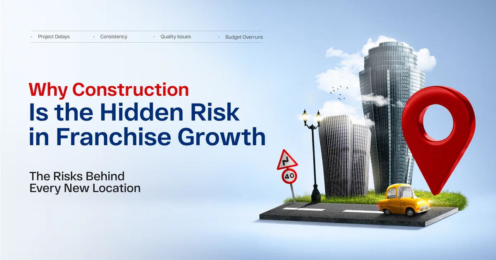
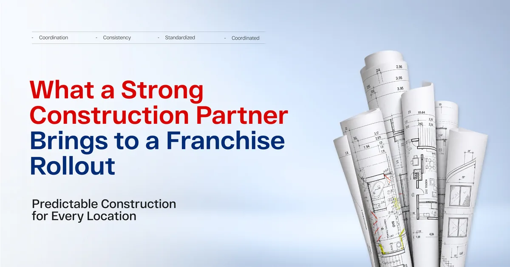
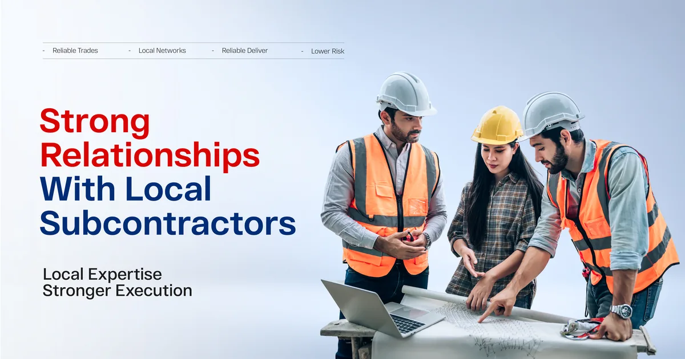
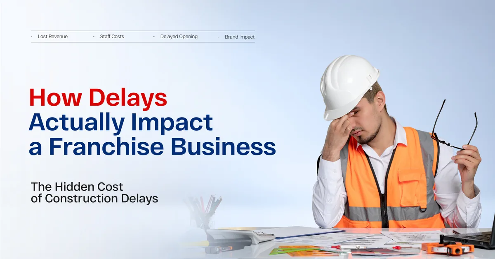
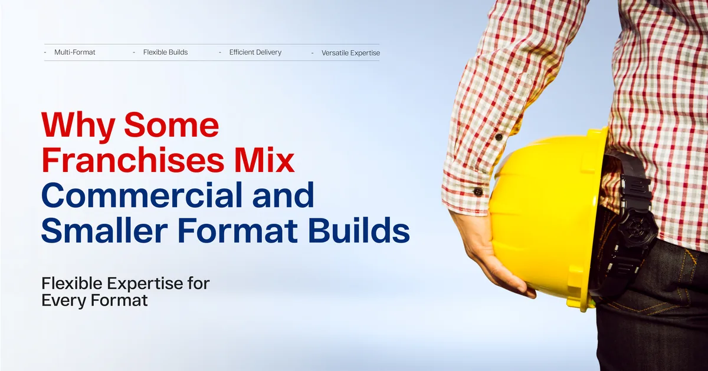
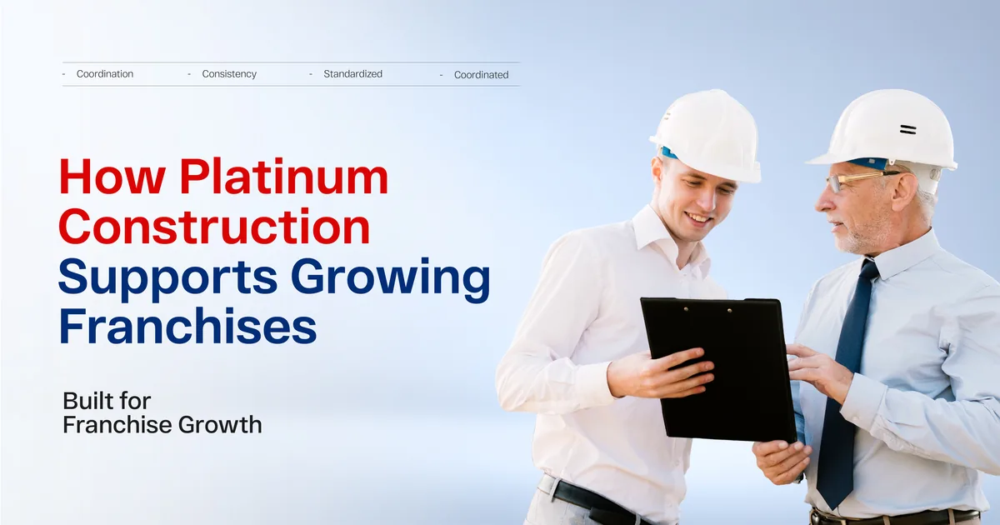
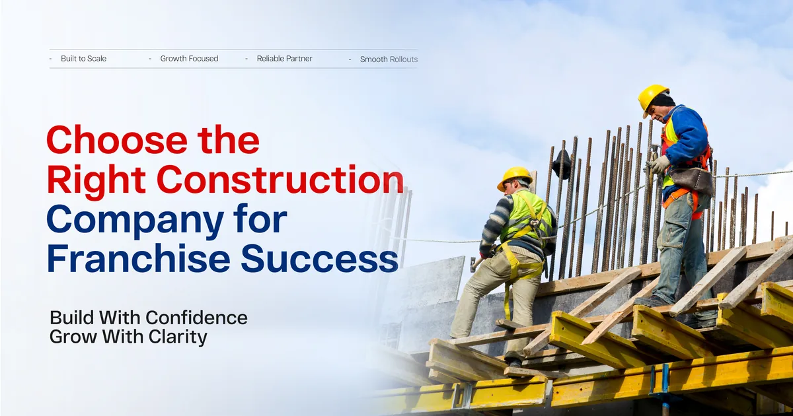

A single delayed build can throw off lease agreements, staffing plans, and marketing launches that were all timed around one opening date. Multiply that across several locations and a small construction delay turns into a real financial problem. This is exactly why the construction company behind a franchise expansion matters just as much as the franchise brand itself.
This article looks at why construction plays such a central role in franchise growth, what tends to go wrong, and how the right building partner keeps an expansion plan actually on track.

Why Construction Is the Hidden Risk in Franchise Growth
Franchise expansion looks simple on a slide deck. Pick a location, sign a lease, build it out, open the doors. In reality, the build out phase is where timelines fall apart most often.
Every location comes with its own permit process, its own site conditions, and its own local construction quirks. A franchise that expects identical timelines across different cities is usually setting itself up for disappointment, unless the construction company managing the work understands how to handle that variation without losing momentum.
This is where experience really shows. A builder who has only handled one off projects tends to treat every new location as a fresh problem to solve from scratch. A builder who specializes in repeatable rollouts treats each new site as a variation on a process they already know well.
Permits Are Rarely the Same Twice
Even within the same province, permit timelines can shift depending on the municipality, the building type, and how busy the local permitting office happens to be that month. A construction company in Canada that regularly works across different regions tends to build in realistic buffers for this, rather than promising a timeline that assumes everything goes perfectly.
Site Conditions Always Have Surprises
Two locations might look nearly identical on paper, yet one has electrical infrastructure that needs upgrading while the other does not. Experienced commercial builders expect this kind of variation and plan around it, instead of being caught off guard every time something unexpected shows up.

What a Strong Construction Partner Brings to a Franchise Rollout
Franchise expansion works best when the construction side feels predictable, even when individual sites are not identical. Here is what that predictability actually depends on.
A Repeatable Process Across Locations
The best construction company for franchise work develops a clear playbook, covering everything from initial site assessment to final inspection. This does not mean every location is treated exactly the same. It means the process for getting there is consistent, which makes scheduling and budgeting far more reliable.
One Point of Contact Across Multiple Sites
When several locations are under construction at once, franchise owners do not want to manage five different project managers with five different communication styles. A strong building construction company assigns a coordinated team that can speak to progress across all active sites clearly and consistently.
Realistic Timelines, Not Optimistic Ones
It is tempting for a builder to promise fast timelines to win the contract. The problem comes later, when those timelines slip and the franchise has already committed to an opening date publicly. A construction company with real franchise experience sets expectations honestly from the start, even if that means a slightly longer estimate upfront.

Strong Relationships With Local Subcontractors
A franchise expanding into a new city benefits enormously from a builder who already has reliable subcontractor relationships there. Local construction companies often have this advantage built in, since they have likely worked with the same electricians, plumbers, and inspectors for years.
Here is a simple comparison of what tends to separate a franchise ready builder from a general contractor handling their first multi site project.
| Area | Franchise Experienced Builder | General Contractor New to Rollouts |
|---|---|---|
| Process | Documented, repeatable steps | Built fresh for each project |
| Timelines | Realistic, with built in buffers | Often optimistic and tight |
| Communication | One coordinated team across sites | Separate teams with inconsistent updates |
| Local Knowledge | Established subcontractor relationships | Learning the local market in real time |
| Budget Accuracy | Consistent across locations | Wide variation from site to site |

How Delays Actually Impact a Franchise Business
It helps to be specific about why construction delays matter so much, beyond the obvious frustration.
A delayed opening pushes back revenue that was already factored into financial projections. Staff hired for a specific start date may need to be paid before the location even opens, or worse, may leave for other jobs out of frustration. Marketing campaigns timed around an opening date often need to be paused or reworked entirely.
None of these costs show up directly in a construction invoice, but they are very real consequences of a build that falls behind schedule.

Why Some Franchises Mix Commercial and Smaller Format Builds
Not every franchise location looks the same. Some brands operate full scale commercial spaces, while others run smaller formats that resemble the kind of project home remodeling companies handle, in terms of scope and budget. A construction partner comfortable working across both the larger builds handled by commercial construction companies and smaller renovations tends to serve multi format franchises better than one that only knows large scale work.
What to Ask a Builder Before a Multi Location Rollout
Franchise owners evaluating a construction partner should go beyond a simple cost comparison. A few direct questions tend to reveal much more.
- How many multi location rollouts have you managed before?
- What happens if one site falls behind while others are on schedule?
- How do you coordinate between sites that are under construction at the same time?
- What is your typical buffer for permit delays in a new city?
- Who is my main point of contact if I have a question about a specific location?

How Platinum Construction Supports Growing Franchises
At Platinum Construction, we understand that franchise expansion is as much about discipline as it is about building. We bring a documented process to every rollout, assign coordinated project management across multiple active sites, and communicate honestly about timelines from the very first conversation.
Our teams work across Ontario, British Columbia, Alberta, and Atlantic Canada, which means we already understand the regional permit differences that can otherwise slow down a fast moving franchise plan. Whether a brand is opening its second location or its twentieth, the same level of attention applies to each one.
We have supported franchise clients through both standard commercial builds and smaller format locations, giving us a wide enough range of experience to adapt to whatever a specific brand actually needs, rather than forcing every project into the same template.
Frequently Asked Questions
Why does construction matter so much for franchise expansion?
Because delays in a single build can affect leases, staffing, and marketing plans that were timed around a specific opening date, creating costs well beyond the construction budget itself.
How do experienced builders handle multiple locations at once?
They typically use a documented, repeatable process and assign coordinated project management, rather than treating each location as a completely separate project.
What is the biggest risk in a multi location construction rollout?
Inconsistent timelines and communication across sites tend to cause the most disruption, often more than any single technical issue.
Should a franchise use the same construction company for every location?
In most cases, yes. Using one experienced construction company helps maintain consistency in quality, timeline expectations, and communication across all sites.
How far in advance should construction planning start for a new location?
Ideally several months before the target opening date, allowing enough time for permits, site assessment, and any unexpected issues to be addressed without rushing.
Can a single builder handle both commercial and smaller format locations?
Yes, many construction companies that work with franchises are experienced across both larger commercial builds and smaller scale formats within the same brand.
What should a franchise owner ask before signing with a builder?
Direct questions about past multi location experience, how delays are handled, and who manages communication across different active sites at once.

Choose the Right Construction Company for Franchise Success
Franchise expansion succeeds or stalls based on details that rarely make it into a business plan, and construction is one of the biggest of those details. Choosing a construction company that understands repeatable rollouts, realistic timelines, and clear communication across multiple sites can be the difference between a smooth growth phase and a stressful one.
If your franchise is planning new locations across Canada and you want a construction partner who treats every site with the same level of care, Platinum Construction is ready to talk through your rollout plan. Visit platinumconstruction.com to start that conversation.